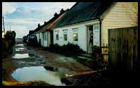
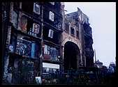

 Daily Telegraph crossword clues often contain words which stand for one or two letters, rather than a word. I found that this made the crosswords rather hard until I started recognising some of the more common abbreviations, which I have listed below.
It is unlikely that these lists will be of much help in solving cryptic crosswords other than the Daily Telegraph's. For a comprehensive explanation of cryptic crosswords in general, including hints on solving them, consult the Frequently Asked Questions (FAQ) for rec.puzzles.crosswords
A A. east E. energy E. I I. large L. left L. north N. one A, I. page P. right R. river R. small S. south S. west W.
about RE. army volunteers TA. Bible OT, NT. church CH. doctor MO. Edward ED. exercise PE. firm CO. games PE. gold AU. Irish IR. male HE. Mayfair WI. motoring organisation AA. silver AG. way ST.
 A typical Telegraph crossword seems to contain about half a dozen anagram clues. In this type of clue there will be a word or phrase which indicates that the adjacent word or words form an anagram of the solution.
A fairly common example of an anagram indicator word is perhaps . So that you get the idea, some more examples are organised, restored, change, dire, prepared, disastrously, wrongly, translation .
The most commonly used word indicating that the solution is a straight pull-out from the clue is in . Other possibilities include from, some of, held, a little : for example,
Foreign words, usually indicated by the name of the language, crop up often enough to merit a mention. For example,
photo, top (Robert): Lancing, England, where I grew up
{kind=link}
{kind=link}